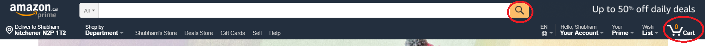

For example, a shopping website should not include long documentations and descriptions, people don't want want that they want to find the desired goods quickly and they donot prefer spending a lot of time in order to complete transactions. Make sure you add symbols like cart icon, which is a link that takes you to the webpage which has your order details or a magnifying glass icon signifying a search bar or a credit card for payment methods, these symbols help people save a lot of time.
Your content should be easily understandable, adding complexities with in the content may confuse or frustrate the user even though your motive is clear.
A website that aims to be accessible to people with disabilities automatically makes it more usable.There are around 1.85 million people in ontario with disabilities, which accounts to 15% of the total population, making it an essential part of the over all design of the website. "source"
As of now we have discussed web usability and ways to implement it, now we will figure out how to test the usability of a website